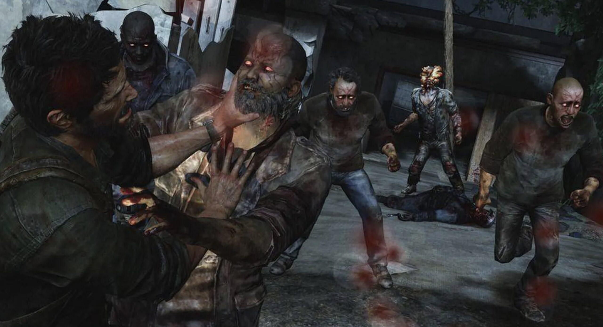
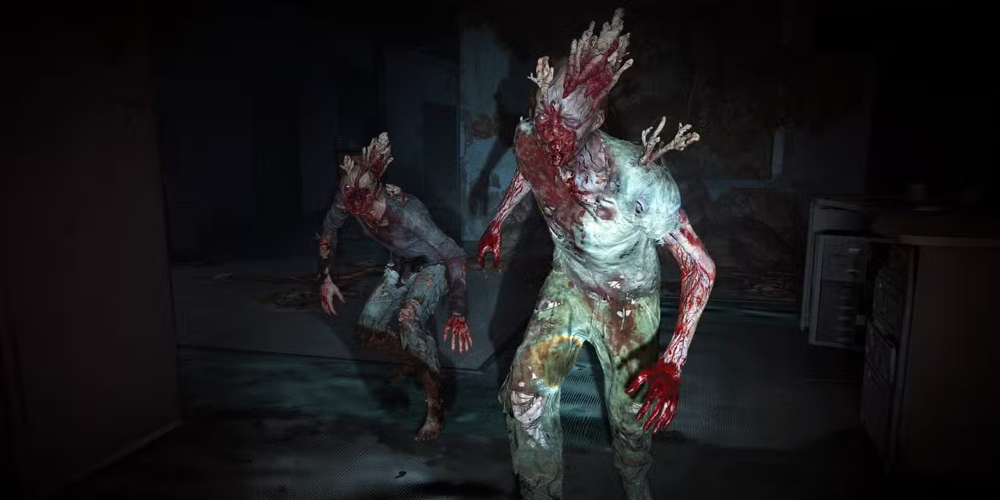
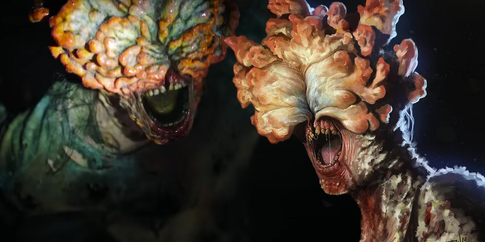

INFECÇÃO SIMPLES

Primeira fase da infecção. Mantêm boa parte da aparência e movimentos humanos, mas agem de forma brutal e impulsiva. Atacam em grupo e com muita velocidade.

Transição entre os corredores e os estaladores. Apresentam deformações causadas pelo fungo, mas ainda conseguem enxergar. Conhecidos por se esconderem e atacar de surpresa.

É o tipo mais icônico de infectado, símbolo visual da franquia. São cegos, com a cabeça tomada por placas de fungo endurecido. Se orientam pelo som, usando estalos assustadores como ecolocalização.